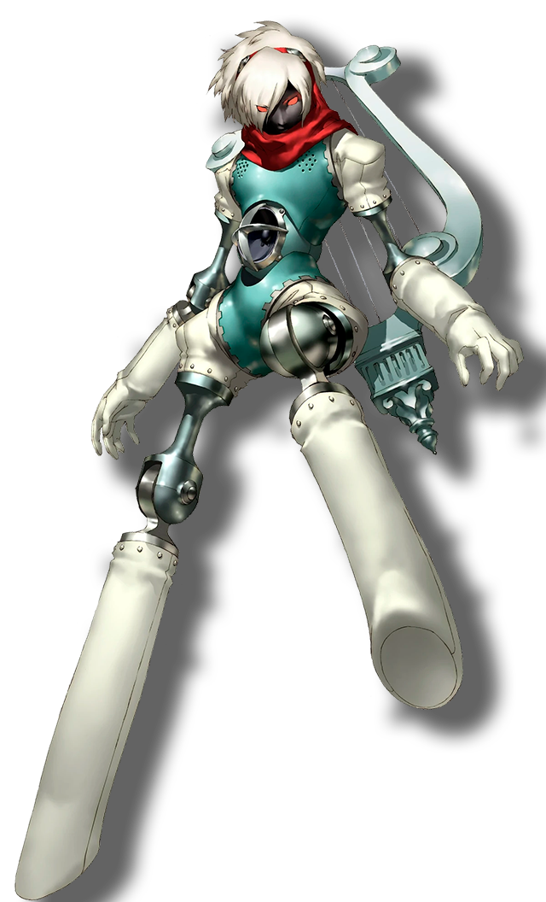

Orpheus


Na mitologia grega, Orfeu era filho do rei trácio Oeagrus e da musa Calíope (algumas versões
têm o pai de Orfeu como o deus Apolo). Apolo, apaixonado por Orfeu, deu-lhe uma pequena lira
dourada, que ele rapidamente dominou. Ensinado a cantar versos por sua mãe, Orfeu era tão
hábil em fazer música que foi chamado de “Mestre das Cordas” e “Pai das Canções”, capaz de
fazer uma música que até pedras e animais seriam obrigados a dançar.
Após a morte de sua esposa Eurídice, Orfeu ficou tão perturbado que seu canto triste levou
ninfas e deuses às lágrimas. Viajando para o submundo, ele usou sua música para amolecer os
corações de Hades e Perséfone, que lhe permitiram trazer sua esposa de volta ao mundo
superior com a condição de que ele andasse na frente e não olhasse para trás até que ambos
chegassem à superfície. . Em sua ansiedade, Orfeu esqueceu seu aviso e olhou para trás
quando só ele chegou à superfície e viu sua esposa desaparecer, desta vez para sempre.
No momento de sua morte, Orfeu havia se tornado um apóstata, rejeitando todos os deuses,
exceto Apolo, a quem agradeceu por sua lira dourada. Por isso ele foi despedaçado pelas
Ménades Dionisíacas (embora de acordo com outras versões, ele seja despedaçado por se
recusar a participar de suas orgias bêbadas (e muitas vezes canibais), por permanecer
comprometido com sua amante perdida), apenas sua cabeça e lira restante. Sua cabeça flutuou
pelo Hebrus, continuando a cantar canções tristes até ser enterrada na ilha de Lesbos,
enquanto sua lira era levada ao céu pelas musas e colocada entre as estrelas.